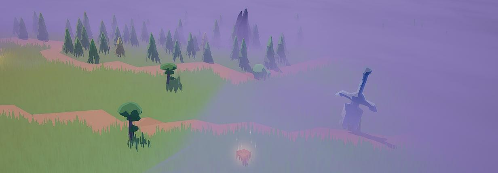
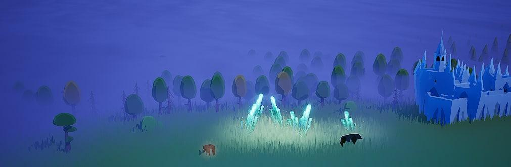
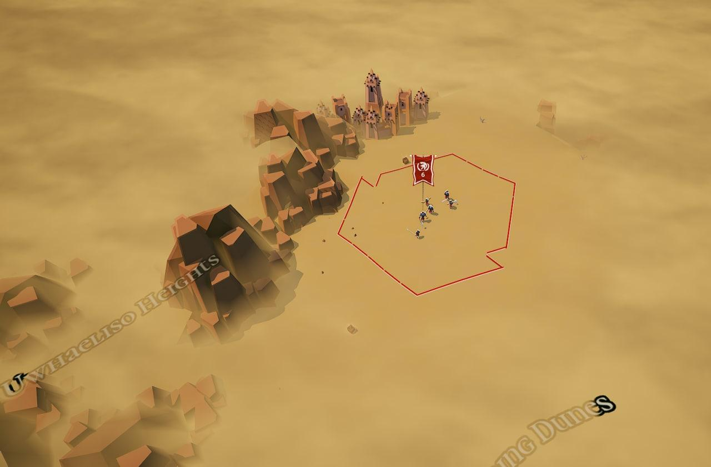
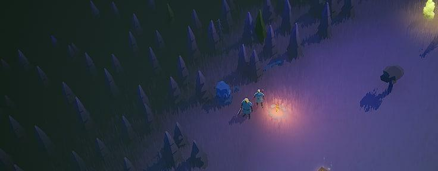
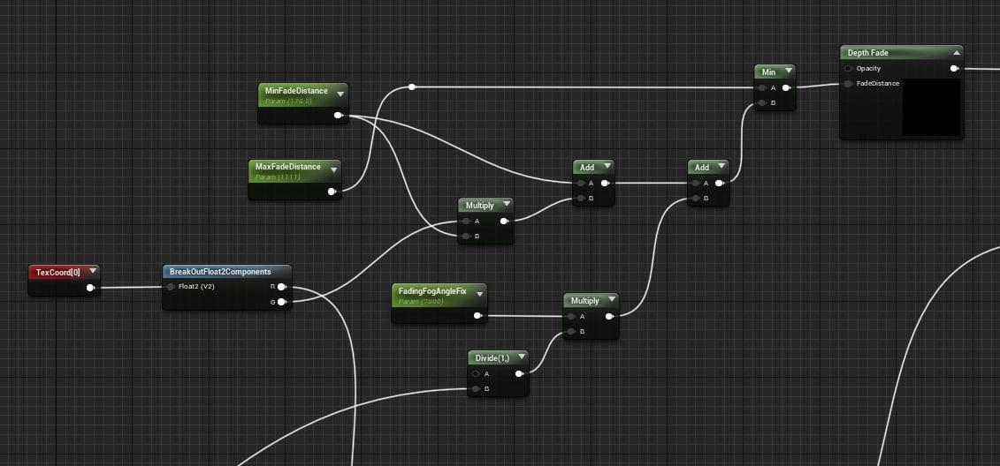
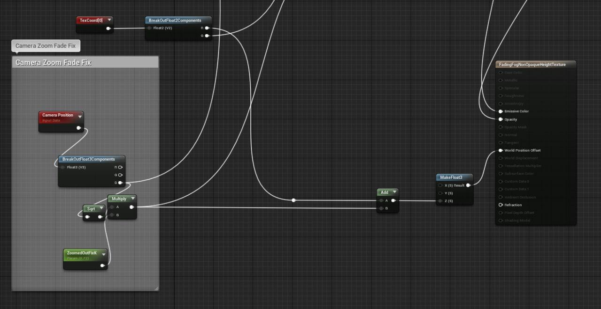
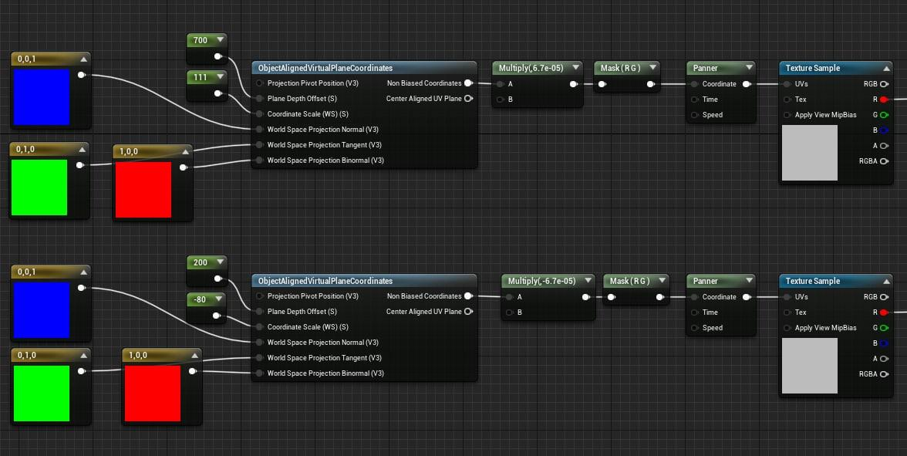
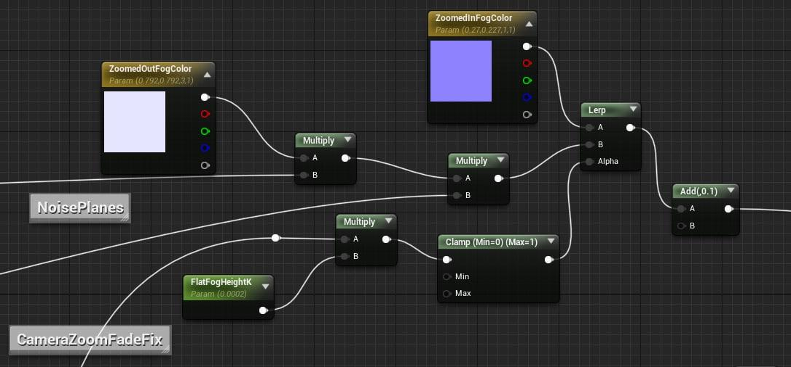
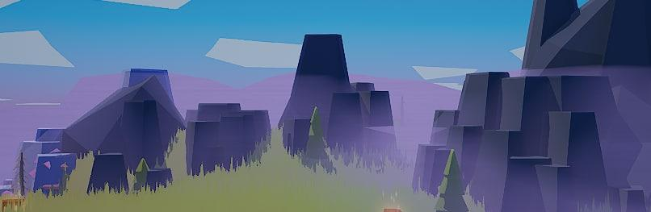

This fog looks almost like volumetrics but takes almost no time to render
Intro
I’ve been requested many times since I posted this video on social networks to write an article about how this fog works. Ok, this will be a tutorial with some details about every part of implementation, so that you can make your own fog with similar steps. Coefficients will have to be different depending on your world size, slopes, camera heights and angles, so simply copying this implementation won’t work.

Fog brings a lot of atmosphere into photos, 3d environments, games, etc. Fancy-looking fog implementations are still an open issue:
-
volumetrics look insanely good and flexible but take ages to render
-
atmospheric fog is useful only for decorating far landscapes, you can’t have different fog heights at the same time
And this solution - I would call it “Fog Mesh” - is not perfect too, but it would work very well for top-down games: you can get beautiful fading, all kinds of animations, and have it rendered with almost zero cost.
This approach is useful both for implementing fog of war for strategy games and for just decoration purposes. Unfortunately, it won’t fit first-person games (unless your character is looking down from a helicopter, for example) - it will have some visual artifacts when you’re looking from inside the fog! Yet, I hope to see more usages of this for top-down games.
The Composition

The fog mesh implementation can be broken down into:
- heightmap mesh that covers your terrain
- gaussian blur on heightmap (in mesh or in material, depending on what you need from the fog)
- depth fade & translucency in mesh material
- world-aligned texture (unless you want a flat-colored fog) in mesh material
- change of opacity depending on the distance to the camera in mesh material
So, as you see, nothing fancy, just a careful combination of parameters, mined out using a lot of iteration - you will definitely need to tweak the parameters for your terrain size, height, and camera angles. I’ll go through each part in detail. But first, let’s look at how to control it.

Different fog colors can make a great contribution to environment flavor.

Representation/Heightmap
Input:
- You’ll need a heightmap of your terrain - texture/array of its height locations. If your terrain is flat, skip this step.
- You’ll need a texture/array of fog data - it can be either
bools orfloats. In Colossal Citadels, the fog of war is gradual and there can be fog/visibility with a value of0.42, but usually in strategies with incomplete information you either have fog of war in a certain location or you don’t have it. - Color, texture, etc will go to material parameters, but you can use vertex buffers of the fog mesh to pass color to the material as well. Just make sure they’re smooth enough
Intermediate representation:
If you don’t have to update the fog every frame, then you can just put fog vertices into the vertex buffer along with some additional data. You will still be able to smoothly blend between two fog states: just swap two fog meshes with world position offset animation in shader.
In case if you have a real-time game, which reveals a little part of fog of war every frame, you can make fog use data from a RenderTarget and draw to it instead. Then GPU will have to take some costs of processing visibility and blurring - that’s the tradeoff of such flexibility. In my example, fog changes only once in a while, and you don’t have to use RenderTarget to blend smoothly.
Fog Visibility Preprocessing
This is the simplest step. Here is how I convert fog value to special intermediate values:
std::vector<float> visibilityA;
std::vector<float> visibilityB;
for (int y = 0; y < worldHeight; ++y)
for (int x = 0; x < worldWidth; ++x)
{
int i = tileCoordsToFogMeshIndex(x, y);
auto i1 = fogMeshIndexToTileIndex(i);
const auto& tile = map->GetTile(i1);
auto modifyAlpha = [&](int coord, const TileInfo& tile){
if (tile.visibility() >= 0.f)
{
float visibility = std::clamp(tile.visibility(), 0.f, 1.f);
visibility = 1.f - visibility;
visibility *= visibility;
visibility = 1.f - visibility;
// this part is specific to Colossal Citadels and reduced visibilites
// around the objects - areas with little amount of fog should look completely clear
int newAlpha = static_cast<int>(visibilityA[coord]) - static_cast<int>(visibility * 42.5f) - 16;
visibilityA[coord] = (newAlpha < 0) ? 0 : newAlpha;
visibilityB[coord] = visibility * 255.f;
}
};
modifyAlpha(i, tile1);
modifyAlpha(i + 1, tile1);
modifyAlpha(i + fogWidth, tile1);
modifyAlpha(i + 1 + fogWidth, tile1);
}
Next, apply a reasonable amount of blur to these fog values:
iir_gauss_blur<float, 1>(worldWidth, worldHeight, visibilityA.data(),
RenderingParameters.Other["FogVisibilityBlur"]);
iir_gauss_blur<float, 1>(worldWidth, worldHeight, visibilityB.data(),
RenderingParameters.Other["FogVisibilityBlur"]);
All these magic values will have to be tweaked for your project. Here are some additional magic formulas that go right after:
for (auto& b: visibilityB) {
b /= 256.f;
b = -b * 210.f;
}
for (auto& a: visibilityA) {
a /= 256.f;
a = std::tanf((1.f - a) * 1.571f) * 3.f;
}
Note that if you use RenderTargets, you’ll have to put similar code to fog material instead.
I use TexCoord buffers to feed fog values into material:
Tangents.SetNum(verticesInFog);
TexCoords.SetNum(verticesInFog);
for (int y = 0; y < worldHeight; ++y)
for (int x = 0; x < worldWidth; ++x) {
int idx = tileCoordsToFogMeshIndex(x, y);
TexCoords.SetTexCoord(idx, FVector2D(visibilityB[idx], visibilityA[idx]));
}
Depth Fade
This is the core of the fog. We already have difficult formula for FadeDistance. We connect output of DepthFade straight to opacity of the translucent material of the fog mesh.

Camera Angles
Note that on changing angles, fog becomes denser or dissappears - this might be not wanted for implementing fog of war, which needs to clearly show where the fog starts. Also, it looks weird when you move the camera and the fog “moves” too. We’ll already mostly fixed this using previous formulas, but it camera height also messes it up. Here is one more step that makes it look better on zoom in.

Note that in Colossal Citadels map blends between isometric and almost orthographic projection by changing field of view. For most cameras, these coefficients would be insane, so tweak them!
Texture
This is the most artistic step - you can put any texture you want - just make sure to put it on a world-aligned virtual plane, or you will observe “artifacts” on height slopes due
Virtual Planes
I made two virtual planes using shifting perlin noise texture. Because two planes have some distance between them, it looks ridiculously good, like the fog is 3-dimensional!
We need to draw a plane on top of material transform the texture so that it looks like a plane parallel to the ground. Luckily, unreal engine implements that already:

Combination of Noises
These two values from previous snipped need to be combined:

This goes to Emissive Color.
On the snipped above I also do do blend between texture and flat color - in my opinion it looks better on very close zoom in.
Smooth update of fog?
Yes, you can blend between two fog states, for example, when you just moved your units and revealed some new territory. There are a variety of ways of doing that:
- initially store fog position in a texture that is used as a heightmap in the shader of fog “plane”. Draw on this position directly or blend between two images.
- Have two meshes that gradually swap between each other
Useful Additions
It’s also possible to embed shadows and godrays here after some additional work - maybe I’ll try these someday. You can also have gradual blends between different colors (depending or tile data or just with fog shader).
Issues
The biggest issue is that fog edges still can cut abruptly if you look at it from an angle. You are also going to observe this issue if the slope is too big, for example you have too high mountains.
Here is what I mean by unwanted angles:

It’s possible to at least partially overcome this by:
- forbidding certain camera angles.
- render fog mesh to stencil or depth buffer and blur edges or/and screen in postprocessing
Fresnel won’t look good unless you have an inadequate amount of vertices.
Conclusion
That’s it! I hope you got an understanding on how to create a similar fog.